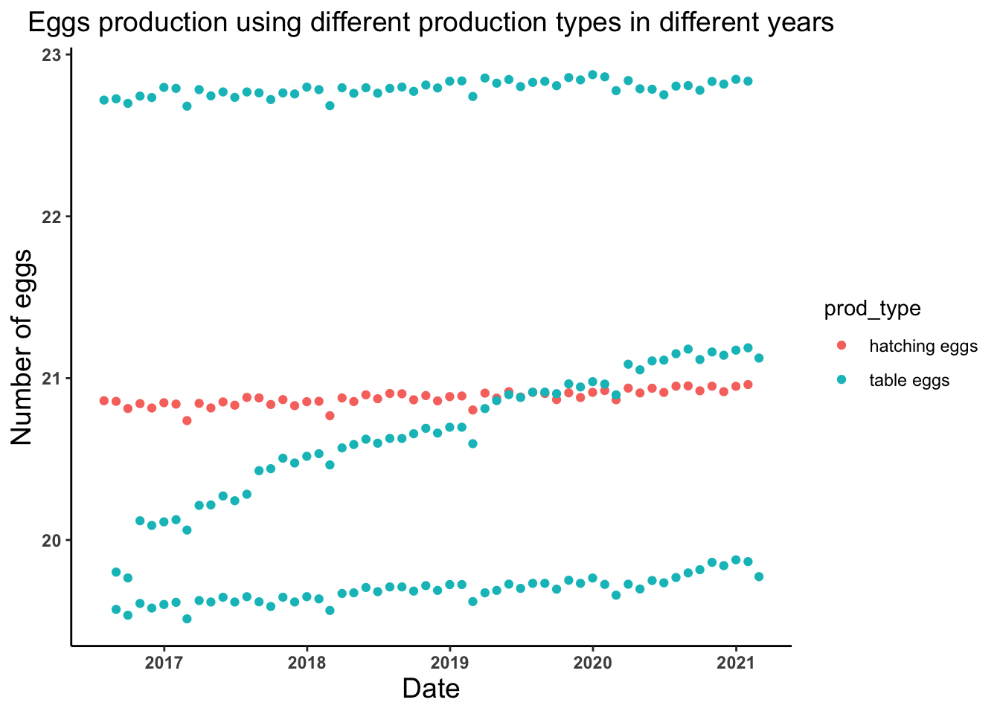
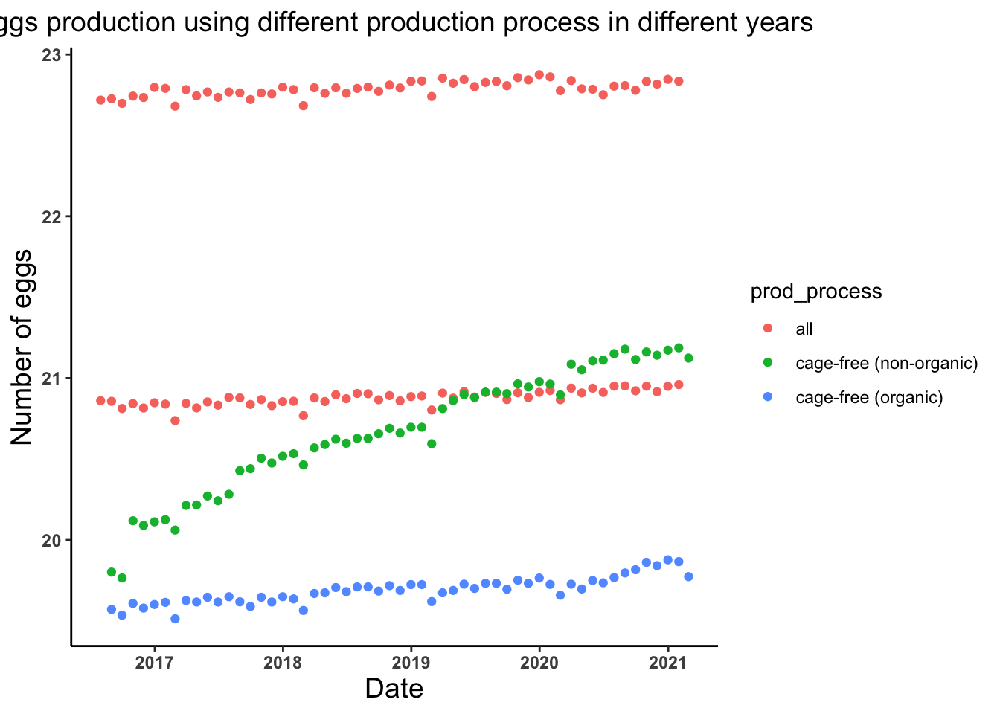
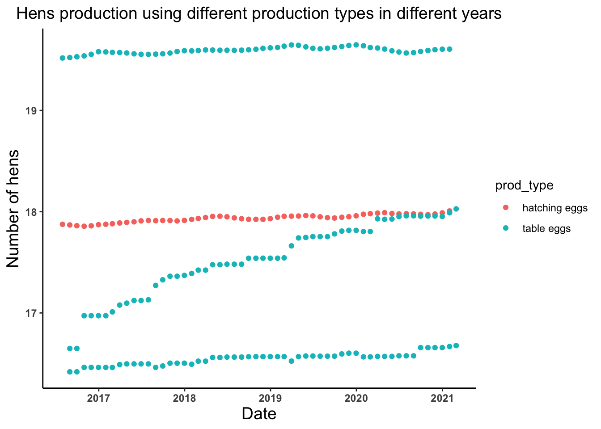
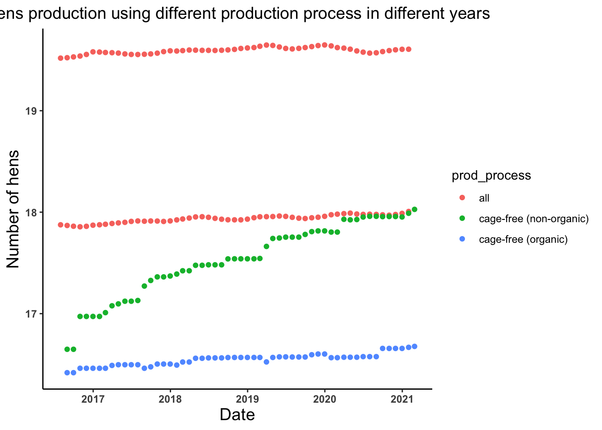
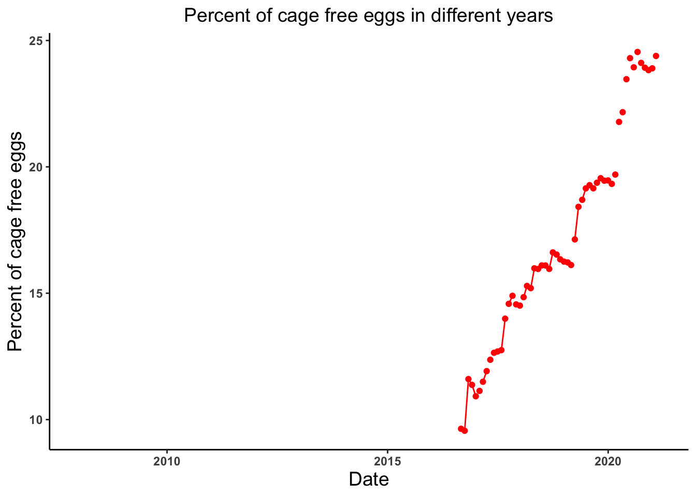
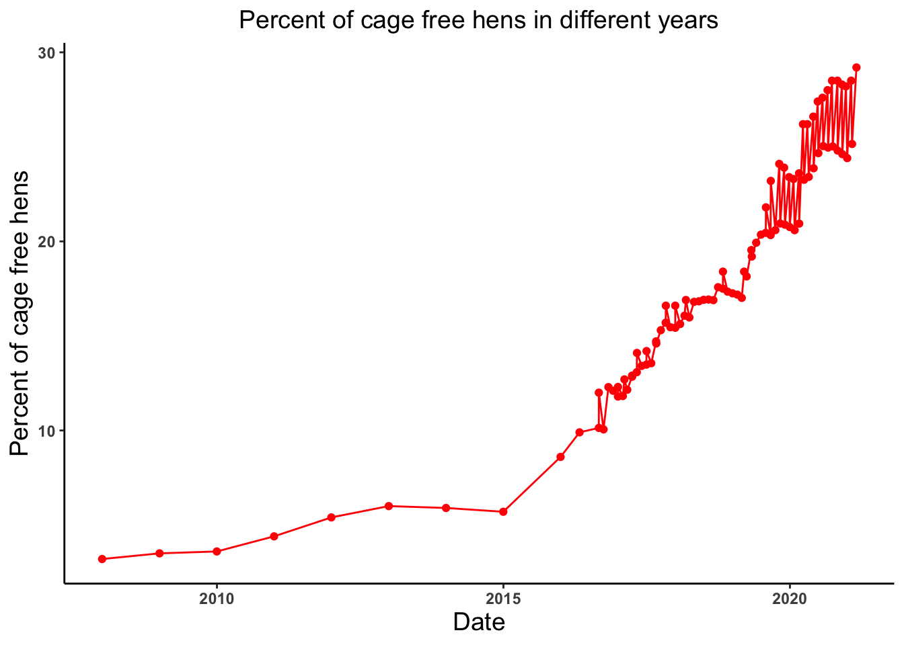
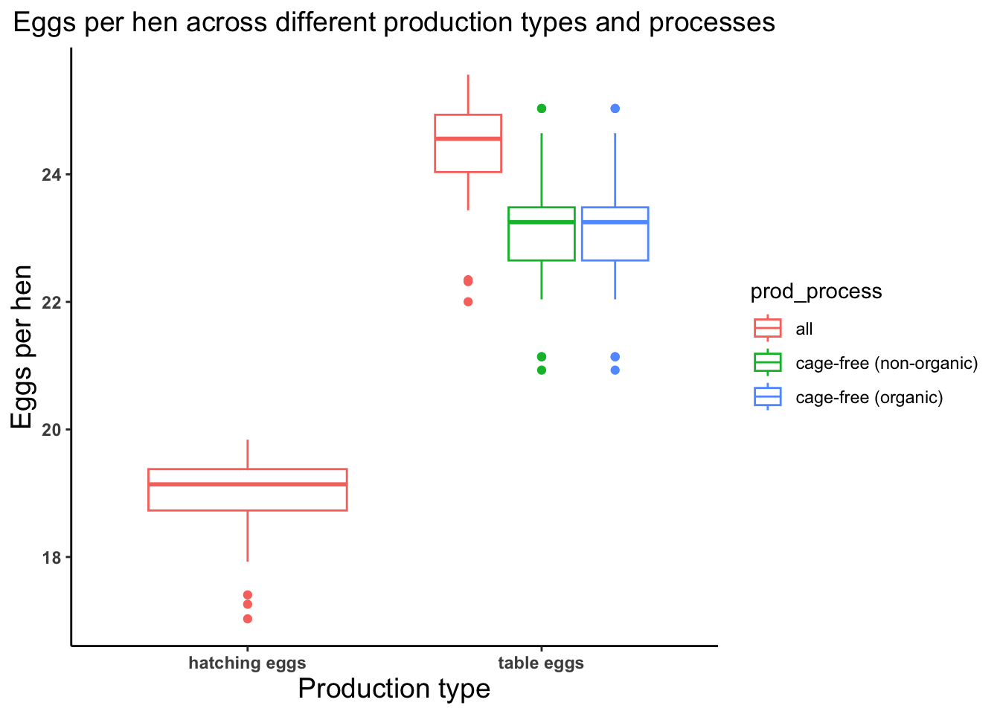
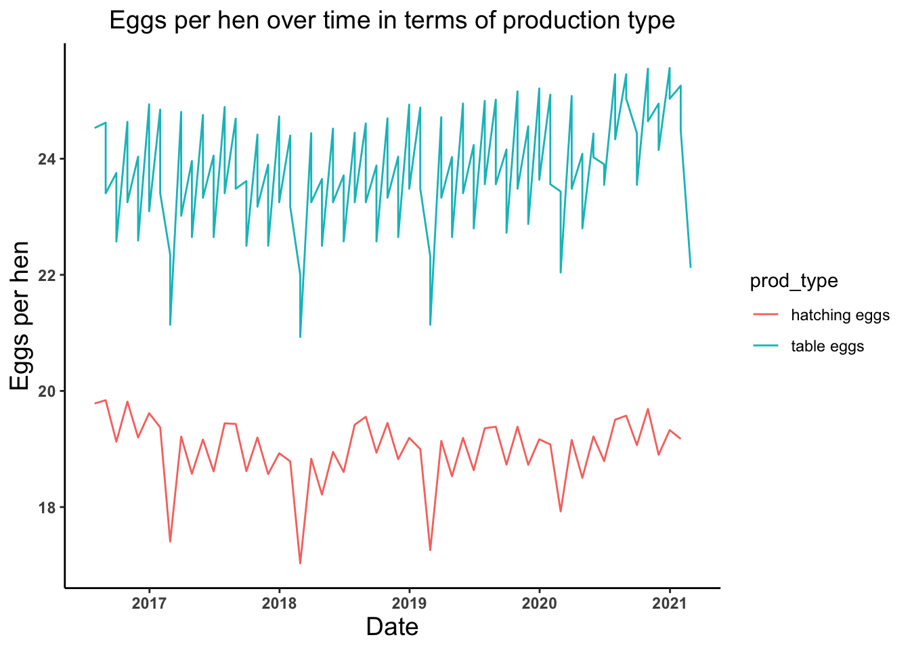

library(readr)
library(tidyverse)
library(dplyr)
library(skimr)
library(ggplot2)
library(tidymodels)
library(naniar)
library(glmnet)
library(rpart.plot)
library(vip)
library(ranger)Tidy Tuesday Exercise 2
Loading the required librairies
Datasets for this week Tidytuesday
egg_prods <- read_csv('https://raw.githubusercontent.com/rfordatascience/tidytuesday/master/data/2023/2023-04-11/egg-production.csv')
cage_free_percents <- read_csv('https://raw.githubusercontent.com/rfordatascience/tidytuesday/master/data/2023/2023-04-11/cage-free-percentages.csv')Data Exploration and Visualization
# Exploring the trends of # of eggs produced by hatching and table eggs production types in different years
egg_date_prods_type_plot <- ggplot(egg_prods, aes(x = observed_month, y = log(n_eggs), color = prod_type)) +
geom_point() +
theme_classic() +
labs(x = "Date", y = "Number of eggs", title = "Eggs production using different production types in different years") +
theme(axis.text = element_text(face = "bold"), plot.title = element_text(hjust = 0.5, size = 14),
axis.title = element_text(size = 14))
egg_date_prods_type_plot
# Trends of the number of eggs produced by different production process in different years
egg_date_prods_process_plot <- ggplot(egg_prods, aes(x = observed_month, y = log(n_eggs))) +
geom_point(aes(color = prod_process)) +
theme_classic() +
labs(x = "Date", y = "Number of eggs", title = "Eggs production using different production process in different years") +
theme(axis.text = element_text(face = "bold"), plot.title = element_text(hjust = 0.5, size = 14),
axis.title = element_text(size = 14))
egg_date_prods_process_plot
# Trends of the number of hens produced by hatching and table eggs production types in different years
hens_date_prods_type_plot <- ggplot(egg_prods, aes(x = observed_month, y = log(n_hens))) +
geom_point(aes(color = prod_type))+
theme_classic()+
labs(x = "Date", y = "Number of hens", title = "Hens production using different production types in different years") +
theme(axis.text = element_text(face = "bold"), plot.title = element_text(hjust = 0.5, size = 14),
axis.title = element_text(size = 14))
hens_date_prods_type_plot
# Trends of the number of hens produced by different production process in different years
hens_date_prods_process_plot <- ggplot(egg_prods, aes(x = observed_month, y = log(n_hens))) +
geom_point(aes(color = prod_process))+
theme_classic()+
labs(x = "Date", y = "Number of hens", title = "Hens production using different production process in different years") +
theme(axis.text = element_text(face = "bold"), plot.title = element_text(hjust = 0.5, size = 14),
axis.title = element_text(size = 14))
hens_date_prods_process_plot
# Trends of the percent of cage free eggs produced in different years
cagefree_eggs_date_plot <- ggplot(cage_free_percents, aes(x = observed_month, y = percent_eggs)) +
geom_point(color = "red") +
geom_line(color = "red") +
theme_classic() +
labs(x = "Date", y = "Percent of cage free eggs", title = "Percent of cage free eggs in different years") +
theme(axis.text = element_text(face = "bold"), plot.title = element_text(hjust = 0.5, size = 14),
axis.title = element_text(size = 14))
cagefree_eggs_date_plotWarning: Removed 42 rows containing missing values (`geom_point()`).Warning: Removed 11 rows containing missing values (`geom_line()`).
# trends of the percent of cage free hens produced in different years
cagefree_hens_date_plot <- ggplot(cage_free_percents, aes(x = observed_month, y = percent_hens)) +
geom_point(color = "red") +
geom_line(color = "red") +
theme_classic() +
labs(x = "Date", y = "Percent of cage free hens", title = "Percent of cage free hens in different years") +
theme(axis.text = element_text(face = "bold"), plot.title = element_text(hjust = 0.5, size = 14),
axis.title = element_text(size = 14))
cagefree_hens_date_plot
Data Wrangling and Visualization
# Average number of eggs produced per hen so lets create an object named eggs_per_hen
egg_prods <- egg_prods %>% mutate(eggs_per_hen = n_eggs/n_hens)
summary(egg_prods$eggs_per_hen) Min. 1st Qu. Median Mean 3rd Qu. Max.
17.03 20.66 23.25 22.43 24.03 25.56 # Plotting average number of eggs produced per hens across different production process and types
eggs_per_hen_plot <- ggplot(egg_prods, aes(x = prod_type, y = eggs_per_hen)) +
geom_boxplot(aes(color = prod_process)) +
theme_classic() +
labs(x = "Production type", y = "Eggs per hen", title = "Eggs per hen across different production types and processes") +
theme(axis.text = element_text(face = "bold"), plot.title = element_text(hjust = 0.5, size = 14),
axis.title = element_text(size = 14))
eggs_per_hen_plot
# Plotting trends of average number of eggs produced per hens in terms of production type
eggs_per_hen_time_plot <- ggplot(egg_prods, aes(x = observed_month, y = eggs_per_hen)) +
geom_line(aes(color = prod_type)) +
theme_classic() +
labs(x = "Date", y = "Eggs per hen", title = "Eggs per hen over time in terms of production type") +
theme(axis.text = element_text(face = "bold"), plot.title = element_text(hjust = 0.5, size = 14),
axis.title = element_text(size = 14))
eggs_per_hen_time_plot